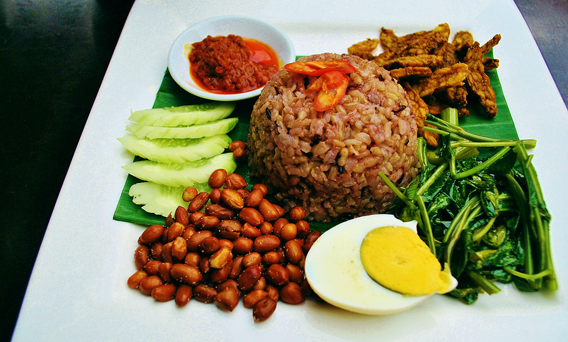

Heavy Food
"Because your body deserves the best."

Refreshing Drink
"Cool down with this delicious and vibrant beverage."
Lifestyle food refers to how individuals choose, prepare, and consume food as part of their daily habits and routines, influenced by their personal preferences, cultural practices, health goals, and environmental considerations. It’s about creating a connection between food and one’s overall way of living, ensuring it aligns with personal values and priorities. Knowing about lifestyle food is important because it impacts multiple aspects of our lives, such as health, well-being, sustainability, and cultural identity. It plays a crucial role in shaping our daily habits and choices, contributing to both personal and global well-being.
One of the primary benefits of understanding lifestyle food is its ability to promote better health. By making informed food choices, individuals can tailor their diets to meet personal health goals, such as managing weight, reducing the risk of chronic diseases, or improving overall fitness. Lifestyle food emphasizes nutrient-rich, balanced diets that address individual needs based on factors like age, activity level, and specific health conditions.
In addition to health benefits, lifestyle food enhances the quality of life. A balanced approach to eating that includes mindfulness can lead to improved energy levels, mood, and productivity. Healthy eating habits also contribute to mental clarity and emotional well-being, ensuring a more fulfilling daily experience.
Lifestyle food often aligns with personal and cultural values, reflecting individual priorities.Another vital aspect of lifestyle food is its role in supporting sustainability. By understanding what we eat, its source, and its impact, we can make informed decisions about food consumption. This awareness helps us avoid overly processed or unhealthy foods that may have negative long-term effects on our health.
Lastly, lifestyle food fosters social connections. Food is often central to social gatherings, and being mindful of diverse dietary lifestyles can create inclusive and enjoyable experiences for everyone. Sharing food becomes a way to build stronger relationships and celebrate cultural diversity.By understanding and embracing lifestyle food, individuals can cultivate a diet that is not only nutritious but also meaningful, sustainable, and aligned with their values. This holistic approach benefits both personal well-being and the broader community.
"Because your body deserves the best."
"Cool down with this delicious and vibrant beverage."
| Dish | Description and Tips |
|---|---|
Here are the tips typical components of a healthy salad:
|
|
Refers to dishes traditionally considered calorie-dense or rich, which have been modified to include healthier ingredients or cooking methods while maintaining their essence and flavor.
|
|
Here are some tips for preparing refreshing drinks in a healthy version:
| |
The best healthy snack options are those that provide balanced nutrition, are easy to prepare, and satisfy cravings without adding excessive calories or unhealthy ingredients.Here are some ideas:
|